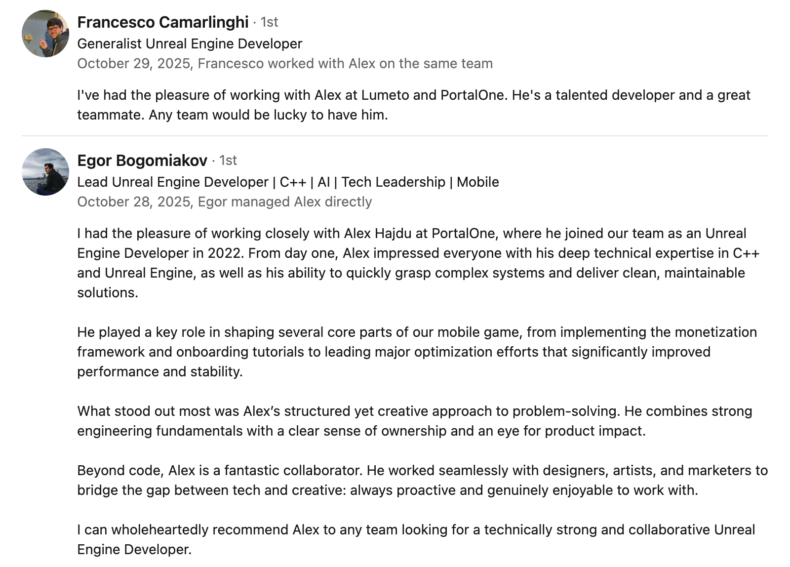

Hi, I’m Alex, Unreal Engine generalist with 10+years of expertise.
I work across a wide range of Unreal Engine development areas — from its core C++ architecture, gameplay framework, and UI systems to networking, performance optimization, software architecture, and the creation of productivity tools, editor plugins, and third-party integrations.
I’m also passionate about R&D work and solving complex technical challenges that others usually often avoid.
Hiring me brings to your team passionate professional, reliable and friendly collegue.
PortalOne is the world's first hybrid games platform. Hybrid games are a new category of entertainment that seamlessly mixes games with live shows that are embedded directly inside the games.
Responsibilities on the project:
Implemented C++ systems and Blueprint modules for a hybrid games platform.
Modified Unreal Engine source to support project-specific requirements.
Built editor plugins and internal tools to accelerate developer workflows.
Created an in-app purchases plugin enabling monetization on iOS and Android.
Defined software architecture across modules; performed code reviews.
Drove performance optimization across CPU and GPU hot paths.
Integrated services and tooling including PlayFab, gRPC, and Azure.
Established and maintained automated testing with the Gauntlet Automation Framework.
Provided non-technical support, QA collaboration, and art pipeline assistance.
Used technologies
C++
PlayFab
Unreal Engine test suite - Gauntlet Automation Framework
git
gRPC
Jira
Azure

Past Projects
Software engineer ( C++ ) @ Happy Finish / Microsoft
Microsoft Mesh enables presence and shared experiences from anywhere – on any device – through mixed reality applications.
Responsibilities on the project:
Developed Service Manager UX as an Unreal Engine editor tool (UE4) in C++.
Built runtime Platform UX using UX Tools and integrated with Microsoft Mesh.
Implemented communication layer between editor tooling, runtime, and Mesh services.
Collaborated closely with Microsoft engineers; conducted code reviews.
Used technologies
C++
Hololens 2
Unreal Engine 4
PowerShell
git
Software engineer ( C++ ) @ Dark Slope Studios
Period: Dec 2020 - *, Contract (b2b) Projects: Various XR applications Relevant links:Dark Slope Studios
VIRTUAL PRODUCTION FOR VIRTUAL WORLDS
Dark Slope is a Virtual Production focused studio. From video games to Virtual Reality; from linear television production to augmented reality experiences, our team is focused on innovative solutions to complicated problems and exciting new forms of entertainment.
Responsibilities on the project:
Delivered C++ features for XR applications with focus on systems reliability.
Researched and implemented runtime full-body pose recording in VR.
Leveraged Gauntlet Automation Framework and PowerShell to support automated workflows.
Used technologies
C++
PowerShell
Unreal Engine test suite - Gauntlet Automation Framework
git, perforce
Software engineer ( C++ ) @ Geodesic Games / Epic Games
Period: Sep 2020 - Nov 2020, Contract (b2b) Projects: nDisplay (Epic Games), Previz(Geodesic Games) Relevant links:nDisplay, Geodesic Games, Epic Games
Geodesic Games - We develop integration tools (plugins) for integrating new technologies and gaming platforms into popular game engines like Unity, Unreal Engine, and Lumberyard (CryEngine). Our goal is to help companies and developers create amazing physical experiences that push gaming and digital interaction to the next level.
Responsibilities on the project:
Contributed C++ features and consultancy for nDisplay and Previz projects.
Integrated libMVRgdt into existing codebases and supported test coverage.
Corona Renderer is a modern high-performance (un)biased photorealistic renderer, available for Autodesk 3ds Max, MAXON Cinema 4D, and as a standalone application.
In this period I worked mainly on the implementation of Corona Renderer into BIM software - ARCHICAD. The main goal was to bring the plugin from the early alpha stage to a commercial release. It was necessary to closely communicate with the ARCHICAD community to get feedback on existing features and implement the new features coming simultaneously from the constantly evolving Corona Renderer core and the community of architects and archviz studios.
The development of the plugin was canceled during the COVID-19 pandemic.
Responsibilities on the project:
Implemented Corona Renderer integration for ARCHICAD, advancing toward commercial readiness.
Integrated features from renderer core; delivered daily builds and conducted code reviews.
Collaborated with the ARCHICAD community and provided plugin support.
Used technologies
C++
Python
Lua
Premake, CMake
PowerShell
Google tests
git
CTO @ WeMakeGames
Period:: Aug.2017 - Mar.2019, Contract (b2b), Product: Castle Heroes, Mobile game ( iOS, Android ), Relevant links:WeMakeGames
Responsibilities on the project:
Led team for Castle Heroes (iOS/Android); owned architecture, gameplay, networking, and optimization.
Managed planning, reviews, mentoring, and project delivery.
Unleash the power of the project management tools like Trello, Assembla, Jira in Unreal Engine! Create tickets from the plugin editor window, from comments in your blueprints, or visual todos created right in the level. Make new comments, complete tasks, assign members, labels, and due dates right in the Unreal editor.
Period: Jan 2017 - Feb 2018 Project: AmblyoVR Relevant links: N/A
AmblyoVR is a product ( VR therapy: PC Oculus, HTC Vive, Android ) designed for treating amblyopia, strabismus, and vergence disorder. The project was stopped due to copyright issues in the U.S.
Responsibilities on the project:
Created AmblyoVR (VR therapy app); implemented VR environment, treatment activities, and stereo rendering.
Built websocket-driven dashboard customization; optimized PC and mobile builds.
Used technologies:
Unreal Engine
C++, Python
Adobe Photoshop
git, svn
Senior Unity / Unreal / Games / XR developer @ Inloopx by AVAST
Period: Dec 2015 - Jul 2017, Contract (b2b) Projects: Skoda Auto Mercedes Daimler, Sygic, Nestle, Slovak Telekom, Samsung, OPEC and more… Relevant links:www.inloopx.com
Responsibilities on the project:
Built AR/VR prototypes and apps for clients including Skoda, Mercedes Daimler, Sygic, Nestle, Slovak Telekom, Samsung, and OPEC.
Supported presales estimates, interviews, and client communication.